Next: Objectives Up: Variables and Constraints and Previous: Variables
A constraint in Gurobi captures a restriction on the values that a set of variables may take. The simplest example is a linear constraint, which states that a linear expression on a set of variables take a value that is either less-than-or-equal, greater-than-or-equal, or equal to another linear expression. Recall that Gurobi works in finite-precision arithmetic, so constraints are only satisfied to tolerances. Tolerances can be tightened to reduce such violations, but there are limits to how small the violations can be -- errors are inherent in floating-point arithmetic.
The available constraint types are linear, SOS, quadratic (both convex and non-convex), and general.
A linear constraint allows you to restrict the value of a linear
expression. For example, you may require that any feasible solution
satisfies the constraint
 . Note that the
matrix-oriented Gurobi APIs (C, MATLAB, and R) require the right-hand
side of a linear constraint to be a constant, while the
object-oriented APIs (C++, Java, .NET, and Python) allow arbitrary
linear expressions on both sides of the comparator.
. Note that the
matrix-oriented Gurobi APIs (C, MATLAB, and R) require the right-hand
side of a linear constraint to be a constant, while the
object-oriented APIs (C++, Java, .NET, and Python) allow arbitrary
linear expressions on both sides of the comparator.
The computed solution should satisfy the stated constraint to within FeasibilityTol (although it may not in cases of numerical ill-conditioning -- we'll discuss this shortly).
Gurobi supports a limited set of comparators. Specifically, you can constrain an expression to be less-than-or-equal, greater-than-or-equal, or equal another. We do not support strict less-than, strict greater-than, or not-equal comparators. While these other comparators may seem appropriate for mathematical programming, we exclude them to avoid potential confusion related to numerical tolerances. Consider a simple example of a strict inequality constraint on a pair of continuous variables: 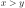. How large would 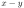 need to be in order to satisfy the constraint? Rather than trying to embed a subtle and potentially confusing strategy for handling such constraints into the solver, we've chosen not to support them instead.
A Special-Ordered Set, or SOS constraint, is a highly specialized constraint that places restrictions on the values that variables in a given list can take. There are two types of SOS constraints. In an SOS constraint of type 1 (an SOS1 constraint), at most one variable in the specified list is allowed to take a non-zero value. In an SOS constraint of type 2 (an SOS2 constraint), at most two variables in the specified, ordered list are allowed to take a non-zero value, and those non-zero variables must be contiguous in the list. The variables in an SOS constraint can be continuous, integer, or binary.
Again, tolerances play an important role in SOS constraints. Specifically, variables that take values less than IntFeasTol (in absolute value) are considered to be zero for the purposes of determining whether an SOS constraint is satisfied.
An SOS constraint is described using a list of variables and a list of corresponding weights. While the weights have historically had intuitive meanings associated with them, we simply use them to order the list of variables. The weights should be unique. This is especially important for an SOS2 constraint, which relies on the notion of contiguous variables. Since the variables in the SOS are ordered by weight, contiguity becomes ambiguous when multiple variables have the same weight.
It is often more efficient to capture SOS structure using linear
constraints rather than SOS constraints. The optimizer will often
perform this conversion automatically. This is controlled
with two parameters: PreSOS1BigM
and PreSOS2BigM. The conversion
is done by
adding constraints of the form  , where
, where  is the
variable that participates in the SOS constraint,
is the
variable that participates in the SOS constraint,  is a binary
variable, and 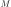 is an upper bound on the value of variable .
Large values of can lead to numerical issues, so these parameters
control the maximum value of that can be introduced by this
conversion. SOS constraints that would require a larger value aren't
converted.
is a binary
variable, and 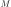 is an upper bound on the value of variable .
Large values of can lead to numerical issues, so these parameters
control the maximum value of that can be introduced by this
conversion. SOS constraints that would require a larger value aren't
converted.
A quadratic constraint allows you to restrict the value of a quadratic
expression. For example, you may require that any feasible solution
satisfy the constraint
 . Note that the
matrix-oriented Gurobi APIs (C, MATLAB, and R) require the right-hand
side of a quadratic constraint to be a constant, while the
object-oriented APIs (C++, Java, .NET, and Python) allow arbitrary
quadratic expressions on both sides of the comparator.
. Note that the
matrix-oriented Gurobi APIs (C, MATLAB, and R) require the right-hand
side of a quadratic constraint to be a constant, while the
object-oriented APIs (C++, Java, .NET, and Python) allow arbitrary
quadratic expressions on both sides of the comparator.
The computed solution should satisfy the stated constraint to within FeasibilityTol. Quadratic constraints are often much more challenging to satisfy than linear constraints, so tightening the parameter may increase runtimes dramatically.
Gurobi can handle both convex and non-convex quadratic constraints. However, there are some subtle and important differences in how the different constraint types are handled. The default algorithms in Gurobi only accept a few forms of quadratic constraints that are known to have convex feasible regions. Constraints of the following forms are always accepted:
 , where 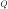 is Positive Semi-Definite (PSD)
, where 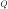 is Positive Semi-Definite (PSD)
 , where is a vector of variables, and
, where is a vector of variables, and
 is a non-negative variable (a Second-Order Cone constraint)
is a non-negative variable (a Second-Order Cone constraint)
 , where is a vector of variables,
and and
, where is a vector of variables,
and and  are non-negative variables
(a rotated Second-Order Cone constraint)
are non-negative variables
(a rotated Second-Order Cone constraint)
If you add a constraint that can't be transformed into one of these
forms, then with default settings you will get an error
(GRB_ERROR_Q_NOT_PSD) when you try to solve the model.
Quadratic equality constraints are always non-convex; they will give a
GRB_ERROR_QCP_EQUALITY_CONSTRAINT error with default settings.
Why distinguish between quadratic constraints in this form and other types of quadratic constraints? Solving models with non-convex quadratic constraints is typically much more expensive. To avoid accidentally solving a much harder problem than may have been intended, Gurobi rejects such constrains by default. If you set the NonConvex parameter to 2, however, then Gurobi will accept arbitrary quadratic constraints and attempt to solve the resulting model.
Note that other non-convex quadratic solvers often only find locally optimal solutions. The algorithms in Gurobi explore the entire search space, so they provide a globally valid lower bound on the optimal objective value, and given enough time they will find a globally optimal solution (subject to tolerances).
We would like to note a subtle point here regarding terminology. A quadratic constraint that involves only products of disjoint pairs of variables is often called a bilinear constraint, and a model that contains bilinear constraints is often called a bilinear program. Bilinear constraints are a special case of non-convex quadratic constraints, and the algorithms Gurobi uses to handle the latter are also well suited to solving bilinear programming problems.
The previously-described constraints are typically handled directly by the underlying optimization algorithms (but not always). Gurobi includes an additional set of constraints, which we collectively refer to as general constraints. General constraints are mostly a convenience feature, designed to allow you to define certain variable relationships easily without having to immerse yourself in the often esoteric details of how to model these relationships in terms of the more fundamental constraints of MIP. Capturing a single one of these general constraints can often require a large set of linear and SOS constraints, plus a number of auxiliary decision variables. By supporting them directly in the Gurobi API, we simplify the modeling process by performing the transformation to a corresponding MIP formulation automatically and transparently during the solution process.
What sorts of variable relationships can be captured with general
constraints? We think of them as belonging to two types:
function constraints and
simple constraints.
Function constraints allow you to state a relationship  , where
and are Gurobi decision variables and
, where
and are Gurobi decision variables and  is chosen from a
predefined list of functions. Gurobi performs a piecewise-linear
approximation of that function within the domain of . Simple general
constraints allow you to state common but more direct relationships
between decision variables. The translation that goes on under the
hood for these is much simpler, and the result is an exact
representation of the original constraint (not an approximation).
is chosen from a
predefined list of functions. Gurobi performs a piecewise-linear
approximation of that function within the domain of . Simple general
constraints allow you to state common but more direct relationships
between decision variables. The translation that goes on under the
hood for these is much simpler, and the result is an exact
representation of the original constraint (not an approximation).
Gurobi supports the following simple general constraints, each with its own syntax and semantics:
 states that the
resultant variable
states that the
resultant variable  should be equal to the maximum of the
operand variables
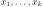 and the constant
should be equal to the maximum of the
operand variables
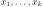 and the constant  .
For example, a solution
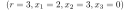 would be feasible
for the constraint
because
.
For example, a solution
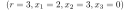 would be feasible
for the constraint
because  is indeed
the maximum of 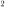, ,
is indeed
the maximum of 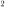, ,  , and 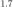.
should be equal to the minimum of the
operand variables
and the constant .
, and 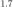.
should be equal to the minimum of the
operand variables
and the constant .
 states that the
resultant variable should be equal to the absolute value of the
operand variable .
For example, a solution 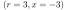 would be feasible
for the constraint
.
states that the
resultant variable should be equal to the absolute value of the
operand variable .
For example, a solution 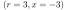 would be feasible
for the constraint
.
 states that the binary
resultant variable should be equal
states that the binary
resultant variable should be equal  if and only if all of the
binary operand variables
are equal to .
For example, a solution
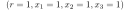 would be feasible
for the constraint
if and only if all of the
binary operand variables
are equal to .
For example, a solution
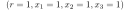 would be feasible
for the constraint
 .
Note that declaring an AND constraint implicitly declares all involved
variables to be of binary type.
should be if and only if at least one of the
binary operand variables
is equal to .
Note that declaring an OR constraint implicitly declares all involved
variables to be of binary type.
is equal to
.
Note that declaring an AND constraint implicitly declares all involved
variables to be of binary type.
should be if and only if at least one of the
binary operand variables
is equal to .
Note that declaring an OR constraint implicitly declares all involved
variables to be of binary type.
is equal to  in
a given solution, where
in
a given solution, where  ,
then the linear constraint
,
then the linear constraint  has
to be satisfied. On the other hand, if
has
to be satisfied. On the other hand, if  (i.e.,
(i.e.,  )
then the linear constraint may be violated. Note that the sense of
the linear constraint can also be
)
then the linear constraint may be violated. Note that the sense of
the linear constraint can also be  or
or  ;
refer to this earlier section
for a more detailed description of linear constraints.
Note also that declaring an INDICATOR constraint implicitly declares the
indicator variable to be of binary type.
states that
the point
;
refer to this earlier section
for a more detailed description of linear constraints.
Note also that declaring an INDICATOR constraint implicitly declares the
indicator variable to be of binary type.
states that
the point  must lie on the piecewise-linear function defined
by a set of points
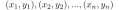. Refer
to the description of
piecewise-linear objectives
for details of how piecewise-linear functions are defined.
must lie on the piecewise-linear function defined
by a set of points
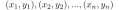. Refer
to the description of
piecewise-linear objectives
for details of how piecewise-linear functions are defined.
As stated above, each general constraint has an equivalent MIP
formulation that consists of linear and SOS constraints, and possibly
auxiliary variables. Thus, you could always model such constraints
yourself without using a Gurobi general constraint. For example,
the MAX constraint
can be
modeled as follows:
 ,
i.e., that the resultant variable has to be at least as large as each
of the operand variables
,
i.e., that the resultant variable has to be at least as large as each
of the operand variables  and the constant .
This can be modeled using inequalities, but we turned them into equations
by introducing explicit continuous slack variables 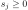, which we
will reuse below.
and the constant .
This can be modeled using inequalities, but we turned them into equations
by introducing explicit continuous slack variables 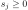, which we
will reuse below.
Those slack variables and the remaining constraints model
, which is more complicated.
In addition to the explicit slacks, this requires the introduction of
binary auxiliary variables
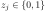.
The SOS1 constraints state that at most one of the two variables 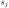 and
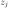 can be non-zero, which models the implication
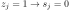.
Due to the third constraint, one will be equal to and thus at
least one will be zero.
Hence,  for at least one
for at least one  due to the first constraint,
or 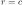 due to the second constraint.
due to the first constraint,
or 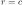 due to the second constraint.
Tolerances play a role in general constraints, although as you might expect, the exact role depends on the constraint type. Generally, violations in the resultant will be smaller than the feasibility tolerance, and integrality violations in integer resultants will also satisfy the integrality tolerance.
By most measures, general constraints are just a means of concisely capturing relationships between variables while removing the burden of creating an equivalent MIP formulation. However, general constraints have another potential advantage: Gurobi might be able to simplify the MIP formulation if it can prove during presolve that the simplified version suffices for the correctness of the model. For this reason, Gurobi might be able to produce a smaller or tighter representation of the general constraint than you would get from the most general formulation. For example, it might be the case that is already implied by the other constraints in the model, so that a simple set of inequalities
 suffices to model
the relevant part of the MAX constraint.
suffices to model
the relevant part of the MAX constraint.
Gurobi supports the following function constraints, each with somewhat
different syntax and semantics ( and below are Gurobi decision
variables, and other terms are constants provided as input when the
constraint is added to the model):
 or
or 
 , where
, where  is the base for the exponential function
is the base for the exponential function
 or
or 
 , where is the base for the logarithmic function
, where is the base for the logarithmic function
 , where 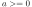
, where 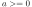


As noted earlier, Gurobi will automatically add a piecewise-linear approximation of the function to the model. You face a fundamental cost-versus-accuracy tradeoff when performing such an approximation, though: adding more pieces produces smaller approximation errors, but also increases the cost of solving the problem. The tradeoff can be complex. Gurobi provides a set of three attributes that help to navigate this tradeoff: FuncPieces, FuncPieceLength, FuncPieceError. They are used as follows:
, often
substantially, which can make it difficult to predict the
relationship between the width of each piece and the number of pieces.
The other relevant attribute is FuncPieceRatio, which controls whether the approximation is an underestimate of the function (0.0), an overestimate (1.0), or somewhere in between (any value strictly between 0.0 and 1.0). You can also choose the special value of -1, which will choose points that are on the original function.
Consider the following simple example:
![\scalebox{1.0}{\includegraphics[width=2.5in]{graphics/func}}](img153.svg)
 . We've set
. We've set FuncPieces to and
FuncPieceLength to  , so we're performing an
approximation with fixed-width pieces of width 1.0. The
domain of is
, so we're performing an
approximation with fixed-width pieces of width 1.0. The
domain of is ![$[0,2]$](img156.svg) , so the approximation has two pieces.
The figure shows 6 points:
, so the approximation has two pieces.
The figure shows 6 points:
 , and
, and
 . If
. If
FuncPieceRatio is set to  , the approximation would be
built from the points below the function (
, the approximation would be
built from the points below the function (
 , and
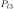). Similarly, if it is set to , the approximation would
be built from the points above the function (
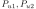, and
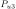). A value of
, and
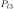). Similarly, if it is set to , the approximation would
be built from the points above the function (
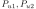, and
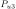). A value of  would use weighted combinations of
the points: times plus
would use weighted combinations of
the points: times plus  times
times  . In this
case, the line segments would be built from the points
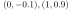, and
. In this
case, the line segments would be built from the points
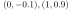, and  . If
. If FuncPieceRatio is set to  ,
meaning that the approximation would be built from points that are on
the original function, in this case the upper points (
,
and ) fit the bill. This will always be the case for a convex
function.
,
meaning that the approximation would be built from points that are on
the original function, in this case the upper points (
,
and ) fit the bill. This will always be the case for a convex
function.
Recall that you can set FuncPieces to to control the
maximum absolute error. In this case, choosing a
FuncPieceError value of  would give the piecewise
approximation shown in the figure, since the distance between the
upper and lower curves is always . A smaller error value would
of course lead to more pieces. We should add that piece widths will
typically be non-uniform when limiting the maximum approximation
error. The approximation algorithms we use try to limit the number of
pieces needed to meet the error targets, which often requires more
refinement in some portions of the domain than in others.
would give the piecewise
approximation shown in the figure, since the distance between the
upper and lower curves is always . A smaller error value would
of course lead to more pieces. We should add that piece widths will
typically be non-uniform when limiting the maximum approximation
error. The approximation algorithms we use try to limit the number of
pieces needed to meet the error targets, which often requires more
refinement in some portions of the domain than in others.
Note that the approximations are guaranteed to be under- and over-estimates in all cases except for polynomials of degree greater than 5. Finding the roots of higher-degree polynomials, which would be required to guarantee this property, is quite difficult.
If you wish to experiment with different approaches to approximating a
set of functions, it is often convenient to be able to change the
approach for all functions at once. We provide a set of parameters
with the same names as the attributes to make it easier to do this:
FuncPieces,
FuncPieceLength,
FuncPieceError, and
FuncPieceRatio. If you set
the FuncPieces attribute on a function constraint to , then
the approximation approach for that constraint will be determined by
the parameter settings instead.
For some of the supported functions, modest values can lead to
enormous values (and vice-versa). This can cause numerical issues
when solving the resulting piecewise-linear MIP model. To avoid such
issues, we limit the range of any or that participates in a
function constraint to [-1e+6, 1e+6]. The parameter
FuncMaxVal allows you to change
these limits, but we recommend that you proceed with caution.
We should point out that PWL approximations can sometimes cause
unexpected results, including sub-optimal solutions or even
infeasible conclusions on feasible models. Consider a simple example
with two constraints:  and . Clearly
and . Clearly
 is a feasible solution, but a piecewise-linear approximation could
introduce breakpoints at
is a feasible solution, but a piecewise-linear approximation could
introduce breakpoints at  and
and  . The resulting
approximation gives a value of
. The resulting
approximation gives a value of  at
at  , which is
sufficiently far from the actual function value that Gurobi
will not consider that a valid solution and declare the
model infeasible, since there are no other solutions
to the constraints. Reducing the maximum approximation error
(by setting FuncPieces to -1
and FuncPieceError to a much
smaller value) would help, but this isn't always the
best way to address the problem, since
tighter error tolerances can substantially increase the number of
pieces in the approximation and thus the cost. We recommend
the following approach when you encounter
unexpected results. For inequalities, you should ask for an
approximation that always
overestimates or underestimates the function (depending on the
sense of the constraint), to ensure that your approximation
will always satisfy the constraint.
The
FuncPieceRatio parameter
allows you to do this.
For equalities, if you have a sense of where your solution is likely to lie,
one option for managing the size of
the approximation is to introduce additional variables
to capture your function in different ranges, and then
perform approximations with different levels of accuracy
on these different pieces.
, which is
sufficiently far from the actual function value that Gurobi
will not consider that a valid solution and declare the
model infeasible, since there are no other solutions
to the constraints. Reducing the maximum approximation error
(by setting FuncPieces to -1
and FuncPieceError to a much
smaller value) would help, but this isn't always the
best way to address the problem, since
tighter error tolerances can substantially increase the number of
pieces in the approximation and thus the cost. We recommend
the following approach when you encounter
unexpected results. For inequalities, you should ask for an
approximation that always
overestimates or underestimates the function (depending on the
sense of the constraint), to ensure that your approximation
will always satisfy the constraint.
The
FuncPieceRatio parameter
allows you to do this.
For equalities, if you have a sense of where your solution is likely to lie,
one option for managing the size of
the approximation is to introduce additional variables
to capture your function in different ranges, and then
perform approximations with different levels of accuracy
on these different pieces.
While users could perform piecewise-linear approximations themselves, there are several advantages to asking Gurobi to do it instead. First, Gurobi can often reduce the domains of variables, by using bound strengthening in presolve, or by exploiting repetition in periodic functions like sine or cosine. Smaller domains means fewer pieces to achieve the same accuracy. Gurobi also provides many options to make experimentation easier (for error control, piece length, etc.). These options can be quite difficult to implement and maintain.